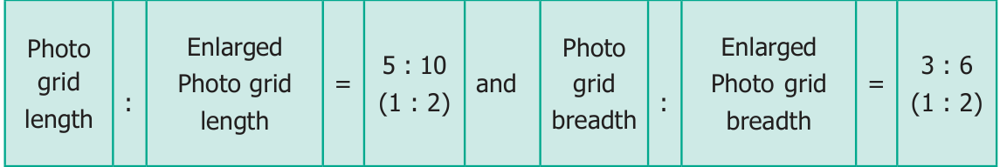
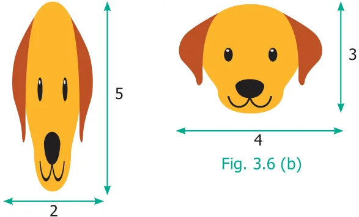

When two ratios are equal , we say that the ratios are in Proportion.This is denoted as a : b : : c : d and it is read as ‘a is to b as c is to d’. The following situations explain about proportion.
Situation 1
The teacher said to the students, “You can do a maximum of 4 projects in Mathematics.
You will get 5 as internal marks for each project that you do”. Kamala asked, “Teacher, What if I do 2 or 3 or 4 projects?” The teacher replied, “For 2 projects you will get 10 marks, for 3 projects you will get 15 marks and for 4 projects you will get 20 marks”.
Here “1 project carries 5 marks” is equivalent to saying “2 projects carry 10 marks”
and so on and hence the ratios, 1 : \(5 = 2\) : \(10 = 3\) : \(15 = 4\) : 20 are said to be in Proportion. Thus 1 : 5 is in proportion to 2 : 10, 3 : 15, 4 : 20 and so on. This is denoted by 1 : 5 : : 2 : 10 and it is read as ‘1 is to 5 as 2 is to 10’ and so on.
Situation 2
The size of the photograph of Srinivasa Ramanujan as shown in Figure 3.3 (a) is of length 5 grids and breadth 3 grids. Figure 3.3 (b) shows the enlarged size of the photograph of length 10 grids and breadth 6 grids. Here,

As the two ratios are equal, the given figures are in proportion. This is represented as 5 : 10 : : 3 : 6 or 5 : \(10 = 3\) : 6 and it is read as ‘5 is to 10 as 3 is to 6’
3.3.1 Proportionality law
If two ratios are in proportion ie., a : b : : c : d then the product of the extremes is equal to the product of the means ad=bc. This is called the proportionality law. Here, a and d are the extremes and b and c are the means. Also, if two ratios are equal ie., ad = bc is called the cross product of proportions.
Example 3.6
By proportionality law, check whether 3 : 2 and 30 : 20 are in proportion.
Solution
Here the extremes are 3 and 20 and the means are 2 and 30.
Product of extremes, ad \(= 3 \times 20 = 60\).
Product of means, bc \(= 2 \times 30 = 60\).
Thus by proportionality law, we find ad = bc and hence 3 : 2 and 30 : 20 are in proportion.
Example 3.7 TRY THIS
A picture is resized in a computer as shown below.
- 1.Fill in the box by using cross

\(\frac{1}{8} = 5\)
- 2.Use the digits 1 to 9 only
\(\frac{2}{4} = \frac{3}{6}\) )
Fig. 3.6 (a)
Do you observe any change in shape and size of the picture? Check whether the ratios formed by its length and breadth are in proportion by cross product method.
Solution
The given pictures are in the ratio 2 : 5 and 4 : 3 respectively.
Here the extremes are 2 and 3 and the means are 5 and 4.
Product of extremes, ad \(= 2 \times 3 = 6\).
Product of means, bc \(= 5 \times 4 = 20\).
Thus, we find ad ! bc and hence 2 : 5 and 4 : 3 are not in proportion.